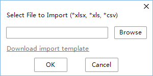
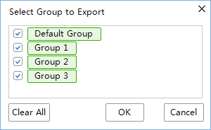

This topic describes how to create, search, import, export local contacts and create group contacts.
Creating
- From the TE Desktop main window, access the new contact window shown in Figure 1 using any of the following methods:
- Click and choose New Contact from the displayed shortcut menu.
- Click , right-click a blank area or a contact, and choose New Contact from the displayed shortcut menu.
- Click , right-click an entry that has not been added to the local directory, and choose Add to Contacts from the displayed shortcut menu.
- Click , right-click an entry that has not been added to the address book list, and choose Add to Contacts from the displayed shortcut menu.
- Enter the contact information described in Table 1.
Table 1 Contact information Parameter
Description
Setting
Name
Name of the contact, which displayed on the local directory.
The value contains a maximum of 100 characters, including letters and digits.
The value must be unique.
Number
Number that has been registered with the registration server and is used to log in to the TE Desktop. Used to place calls, this number is assigned by the registration server administrator.
The number contains a maximum of 100 characters.
Groups
Group to which the contact belongs.
By default, a new contact is assigned to the Default Group. To add the contact to another group from the drop-down list.
Mobile
Mobile number of the contact.
Enter the mobile number of the contact to add.
Office
Office number of the contact.
Enter the office number of the contact to add.
Email
Email address of the contact.
Enter the email address in the correct format.
The value contains a maximum of 100 characters.
Address
Address of the contact.
The value contains a maximum of 100 characters.
- Click OK.
Searching
To clear the text box, click  .
.
- : The contact is online.
 : The contact is busy.
: The contact is busy.- : The contact is offline.
Importing and Exporting
Exported local contacts are saved to .xlsx, .xls, or .csv files and can be edited in batches.
- To import contact entries, click in the main window and choose Import Contacts, or right-click a blank area or a contact in the local contacts window and choose Import Contacts.Figure 2 Importing local contacts

To download the import template where you can add and edit contacts to be imported to the TE Desktop, click Download import template.
- To export contacts, right-click a contact in the local contacts window and choose Export Contacts.Figure 3 Exporting local contacts

Editing and Deleting
- Right-click a contact and choose Edit Contact. In the displayed Contact Details dialog box, you can edit the contact.
- Right-click a contact and choose View Details. In the displayed Contact Details dialog box, you can edit, delete, or place an audio or video call to the contact.
- Right-click a contact and choose Delete Contacts. When prompted, confirm to delete the contact.
Grouping
- In the main window, click and choose New Group.
- In the local contacts window, right-click a group or blank area and choose New Group from the displayed shortcut menu.
You can rename or delete any groups except Recent Contacts and Default Group.
Setting Nickname
In the local contacts window, right-click the contact and select Set Nickname, enter the nickname, then click OK.